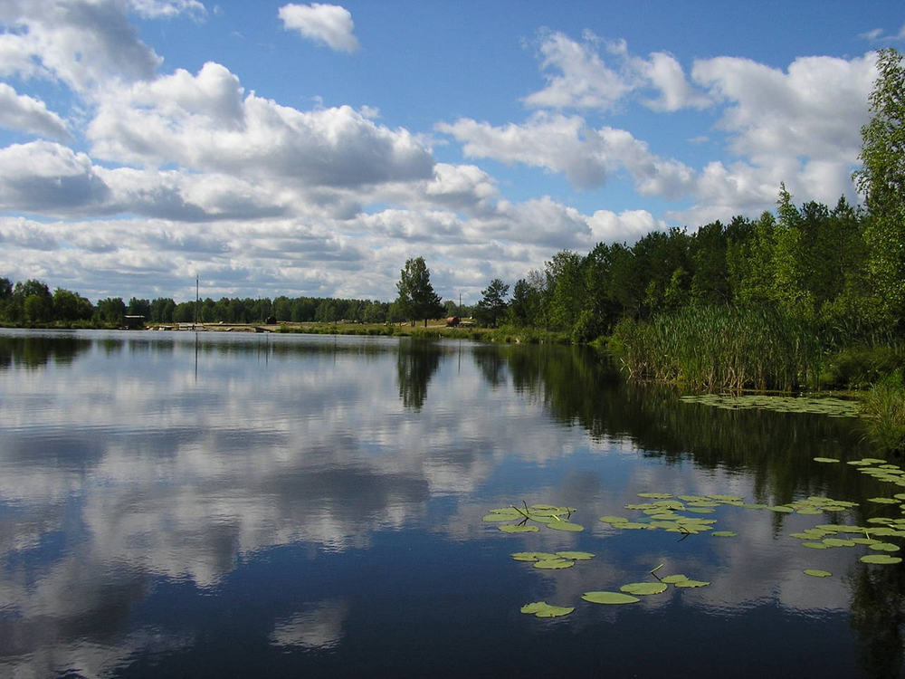

Стихи
Главная История Стихи Культурная жизнь
СТИХИ К ПЕСНЯМ О СРЕДНЕМ ВАСЮГАНЕ
Песня «Лебедушка», прозвучавшая на митинге открытия памятного креста репрессированным была написана в 2003 году к спектаклю «По Муромской дорожке» по рассказам нашего земляка Михайлова Павла. Слова к песни написала Эксук-Оглы Галина Александровна – учитель русского языка и литературы, а музыку Чернов Валерьян Васильевич – баянист (умер)
Лебедушка
Ой да батюшка, белый лебедь мой!
Неужель забыл верный путь домой?
Иль от чёрных туч белый свет померк?
Иль мою любовь ты навек отверг?
Ой лебёдушка, свет мой девица!
Нам на встречу вновь не надеяться...
Чёрный ворон смял крылья белые,
И в чужой-то край полетел я.
Ой да батюшка, белый лебедь мой!
Да лети ж скорей ты в свой дом родной!
Без тебя весь свет мне теперь не мил.
Жить всю жизнь вот так уж не будет сил.
Ой лебёдушка, зорька ясная,
Ты не жди меня понапрасну.
Дверь в мой новый дом не открыть ключом
Часовой с ружьём всё стоит при нём.
Васюган
Посмотрю из окна вертолета
Ностальгия сжимает в капкан!
Все болота, родные болота!
И река подо мной Васюган.
Сотни речек уже повидала,
Васюган не беру я в расчет.
Чтобы так вот извивалась
Я нигде не видала еще!
Васюган. Что за слово такое?
Расспросила о нем остяка.
В переводе на хантский простое
Вас- коричневая, Югана Река.
Настоялась на травах болотных,
Свои воды несет через топь,
В окруженье лесов первородных
И впадает в белесую Объ.
Васюган! Мое детство и юность.
Ты прости, я с тобою лишь только во снах!
Как хочу, чтоб однажды проснулась
На песчаных твоих берегах!
Крайний Север мне душу согреет,
Растревожит высокий полет!
Так лети же, лети же быстрее,
И печаль ты уйми вертолет!
